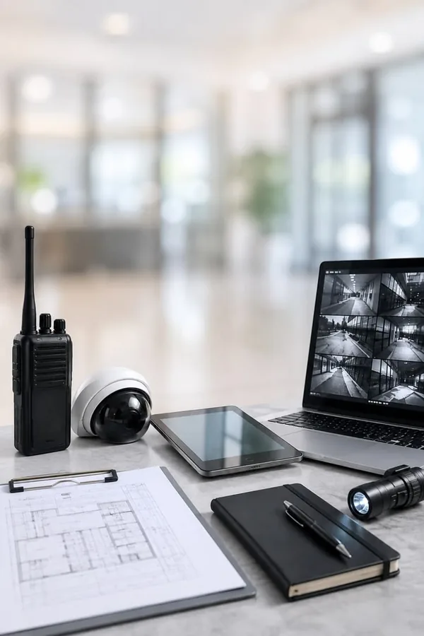

Monitoramento 24 horas
Central de monitoramento com acompanhamento contínuo dos eventos.
A Estrutec desenvolve soluções inteligentes para empresas, residências, condomínios residenciais e empresariais, galpões, lojas e áreas públicas, com monitoramento 24 horas, central própria e projetos personalizados.
Quero proteger meu espaçoMonitoramento com central própria. Todos os dias, 24 horas.
Cadastre-se e fale com a Estrutec pelo WhatsApp.
Ver uma imagem pelo celular não significa necessariamente que todo o sistema esteja funcionando como deveria.
Muitas falhas só aparecem depois de uma ocorrência.
Uma câmera fora de posição (ponto cego).
Uma gravação que parou.
Uma falha no armazenamento.
Uma visão noturna que não funciona.
Combinamos diferentes tecnologias para construir uma estrutura de segurança de acordo com a sua necessidade.
Central de monitoramento com acompanhamento contínuo dos eventos.

Câmeras e sistemas de vídeo para ampliar controle, prevenção e identificação.

Sistemas integrados para identificar movimentações e situações de risco.

Mais controle sobre quem entra, sai e circula pelo ambiente.

Visualize imagens ao vivo e acompanhe seu local diretamente pelo celular.

Cada solução considera o ambiente, a operação e o nível de proteção necessário.

Uma plataforma completa para ampliar a segurança de áreas públicas e privadas, com câmeras, inteligência artificial, monitoramento 24 horas e integração com sistemas de segurança pública.
Em caso de falta de energia, as câmeras e o poste inteligente continuam gravando com a alimentação de emergência.Câmeras, alarmes, sensores, controle de acesso, postes inteligentes e monitoramento precisam trabalhar juntos. O objetivo não é instalar mais equipamentos. É aumentar sua capacidade de prevenção, controle e resposta.
Empresas, galpões, lojas e outras operações comerciais com proteção planejada para cada ambiente.
Soluções para condomínios residenciais e empresariais, com mais controle sobre acessos e áreas compartilhadas.
Uma solução planejada para as necessidades da sua casa.
Postes inteligentes e monitoramento para apoiar a segurança em vias e espaços públicos.
Você explica o que deseja proteger e os principais desafios do local.
Analisamos os pontos críticos e as necessidades do ambiente.
Definimos quais tecnologias e equipamentos fazem sentido para sua realidade.
Instalamos, configuramos e integramos os sistemas.
Monitoramento contínuo, acesso remoto e manutenção preventiva, de acordo com a solução contratada.
Acompanhamento dos eventos por equipe interna, sem terceirização.
Acompanhamento contínuo para diferentes tipos de operação.
Alarmes, câmeras, aplicativo e controle de acesso trabalhando de forma complementar.
Guarulhos, Mogi das Cruzes e Arujá. Consulte a equipe sobre a cobertura na sua região.
Empresas apresentadas entre os clientes da Estrutec


“Técnicos extremamente profissionais e qualificados!”
Avaliação publicada no Google
“A melhor empresa de segurança e monitoramento, tratamento humano.”
Avaliação publicada no Google
“Obrigado pelos serviços!!!”
Avaliação publicada no Google
Respostas para você dar o próximo passo com mais clareza.
Atendemos empresas, residências, condomínios residenciais e empresariais, galpões, lojas e áreas públicas.
É uma plataforma de segurança para áreas públicas e privadas que reúne câmeras, inteligência artificial, monitoramento 24 horas e integração com sistemas de segurança pública.
Sim. Em caso de falta de energia, as câmeras e o poste inteligente continuam gravando com a alimentação de emergência.
Sim. O monitoramento 24 horas é uma das nossas principais soluções. A equipe orienta a contratação de acordo com as necessidades do seu espaço.
Sim. As soluções com acesso remoto permitem visualizar as imagens pelo aplicativo. A disponibilidade depende da configuração e da solução contratada.
Sim. O acompanhamento dos eventos é realizado por equipe interna da Estrutec.
Sim. Oferecemos planos de manutenção preventiva para manter os sistemas em condições adequadas de operação. Consulte as opções com nossa equipe.
Atendemos Guarulhos, Mogi das Cruzes e Arujá. Para outras localidades da Grande São Paulo, consulte a disponibilidade com a equipe.
Fale com a Estrutec para entender quais tecnologias podem aumentar a proteção da sua empresa, condomínio, residência, galpão, loja ou área pública.
Inicie seu atendimento pelo WhatsApp.